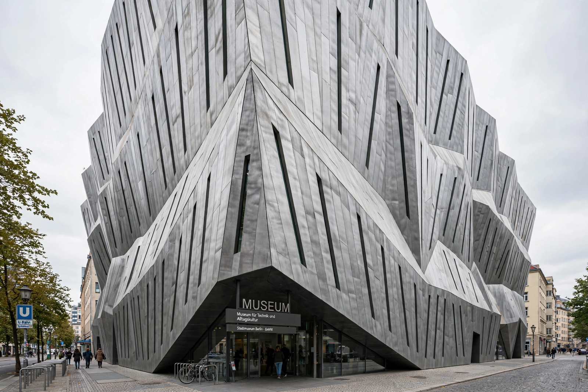

From Wikipedia, the free encyclopedia
| Jewish Museum Berlin | |
 | |
| Location | Lindenstraße, Kreuzberg, Berlin, Germany |
|---|---|
| Architect | Daniel Libeskind |
| Established | 2001 (building completed 1999) |
| Type | History museum |
The Jewish Museum Berlin (Jüdisches Museum Berlin) is the largest Jewish museum in Europe. It presents the social, political and cultural history of Jews in Germany from the Middle Ages to the present, in a building designed by Daniel Libeskind that has become one of the most celebrated works of contemporary architecture.
A first Jewish museum in Berlin opened in 1933 but was closed by the Gestapo in 1938, its collection confiscated. The idea of a new museum arose in the 1970s; a Jewish Department was established within the Berlin Museum in 1978, and in 1988 the city announced a competition for a dedicated extension. Libeskind's design, titled "Between the Lines," won, and his building was completed in 1999. It stood empty for two years — visited by hundreds of thousands of people who came to see the architecture alone — before the museum opened there in September 2001.
The zinc-clad building is a compressed zigzag, cut by a straight void that runs through it: a series of empty, unheated concrete shafts that visitors must cross repeatedly, materialising the absence of murdered and exiled Berlin Jews. Three underground "axes" organise the visit — the Axis of Continuity, the Axis of Exile (leading to the Garden of Exile, a slanted forest of concrete pillars), and the Axis of the Holocaust, ending in the bare concrete Holocaust Tower. A straight line of windows derives from plotting the addresses of Jewish and German cultural figures on a map of Berlin, forming what Libeskind described as an "irrational matrix" of a compressed Star of David.
The museum's core exhibition, installed in 2001 and comprehensively renewed in 2020, presents two thousand years of German-Jewish history through objects, documents, artworks and interactive displays. The museum also holds the Rafael Roth Learning Center, major archival collections, and Menashe Kadishman's installation Shalekhet (Fallen Leaves), thousands of iron faces covering the floor of one void.